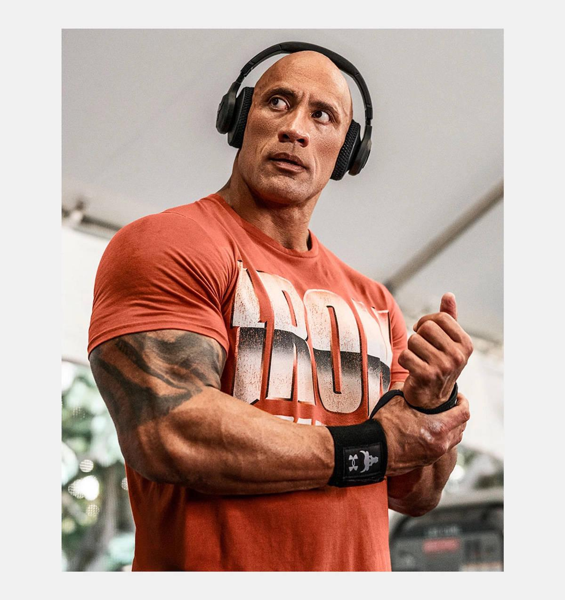
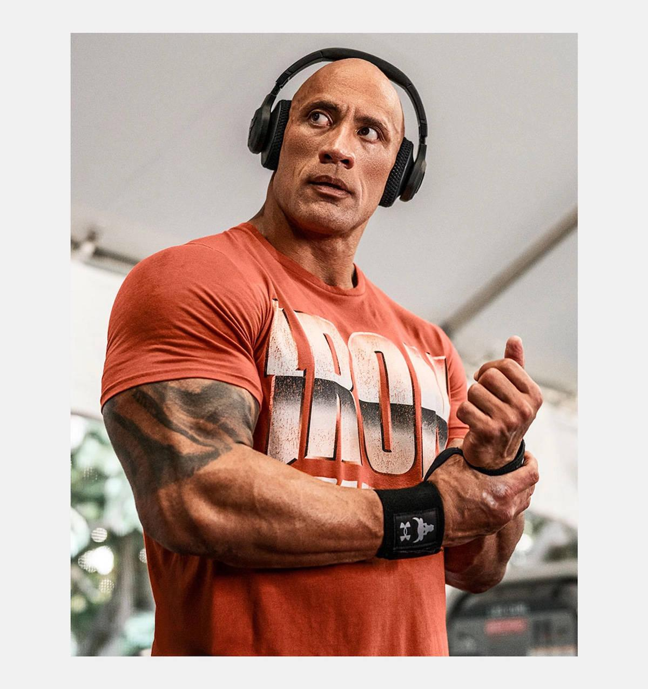

Al giorno d'oggi le DAW sono molto usate per generi principalmente urban, che stanno salendo a vista d'occhio. In questi generi la strumentale ha un ruolo importante quasi quanto la voce, e quindi avere un produttore più o meno bravo fa molta differenza. Molti di questi hanno assunto una fama uguale o superiore a quella dei cantanti, fenomeno che si è visto molto poco prima di questo periodo storico, e sono diventati degli esponenti principali di questa cultura
Esempi sono produttori come:
Metro Boomin, pseudonimo di Leland Tyler Wayne (Saint Louis, 16 settembre 1993), è un produttore discografico e disc jockey statunitense. Negli ultimi anni si è imposto come uno dei produttori musicali di riferimento della scena hip hop americana, in particolare nel sottogenere trap.
Andre Michael Loblack (nato il 6 aprile 1997), conosciuto professionalmente come 808Melo o 808MeloBeats, è un produttore discografico e cantautore britannico di Ilford, East London. 808Melo è considerato un pioniere della drill britannica e della drill di Brooklyn ed è noto per le sue produzioni pesanti.

Dr. Dre, pseudonimo di Andre Romelle Young (Compton, 18 febbraio 1965), è un beatmaker, rapper, produttore discografico, imprenditore, ex disc jockey e regista statunitense. Il ruolo di Dre nel panorama "West Coast" è stato di vitale importanza, sia per la diffusione del Gangsta Rap a sfondo politico con gli N.W.A prima sia alla diffusione del G-Funk successivamente. La sua figura è anche chiave per l'esplosione di grandi talenti musicali come Snoop Dogg ed Eminem, per citarne alcuni.
E molti altri:...
 
